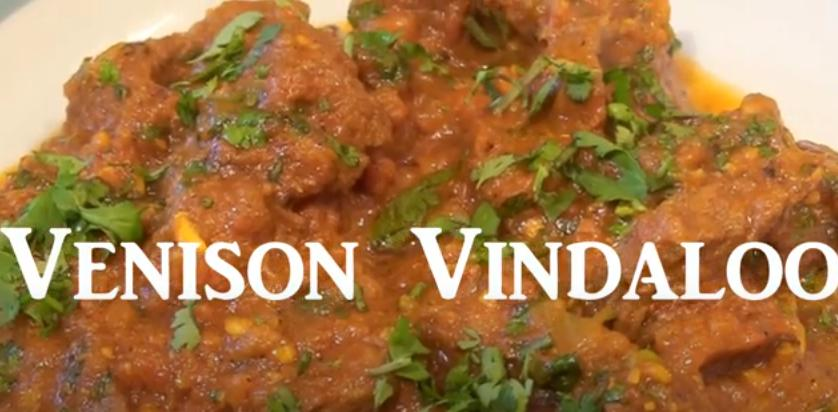

Venison Vindaloo

Description
A recipe for Venison Vindaloo (usually a pork recipe) by the Omnivore Indian (link below).
I've tried it - it's delicious! Venison benefits from the extra cooking time, being a tough meat to cook.
Venison Vindaloo
Ingredients
For the Marinade
- Diced Venison 600g
- 2 Dried red chillis
- 4 cloves
- 4 cinammon sticks
- Black peppercorns
- 6 green cardamon pods
- 1 teaspoon of cumin seeds
- 1 teaspoon of ginger paste
- 1 teaspoon of garlic paste
- Juice of half a lemon
For the Vindaloo
- 2 dried red chillis
- 1 teaspoon of black peppercorns
- 1 teaspoon of turmeric powder
- 1 teaspoon of cumin powder
- 4 cloves of garlic
- 1 large red onion
- 1 can of chopped tomatoes
- 3 to 4 tablespoons of red wine vinegar
- 2 teaspoons of salt
- 1 to 2 cups of water
- Fresh corriander to garnish
Directions
Marinating the meat
- Fry the whole spices in a medium heat dry pan for a minute or two
- Grind the roasted spices into a powder
- Add the lemon juice, garlic paste, ginger paste, then the ground spices to the meat, mixing them in thoroughly
- Cover and marinate the meat in the fridge for at least 24 hours
Cooking
- Finely chop the garlic
- Dice the red onion
- Heat some oil in a heavy-bottomed pot
- Add the dry chillis and the chopped garlic to the pot and stir
- Add the red onions and fry for 2 to 3 minutes or until soft
- Add the turmeric and cumin powder as well as the red wine vinegar, stir for a minute
- Add the chopped tomatoes, frying for 2 to 3 minutes
- Add the marinated venison to the pot, stiring on high heat for a few minutes
- Stir in the salt, and add the water and bring to a boil
- Cover and cook on a low heat for 45 minutes
- Grind the peppercorns
- After the meat has been cooking for 45 minutes, check to see if cooked. If there is too much water, uncover and cook on high heat to reduce, stiring the meat
- When the sauce is thick add the ground peppercorns and garnish with chopped corriander
- Stir and serve, garnishing with more corriander if desired
- Serve with naan, rice, or another carb of your choosing!
Return